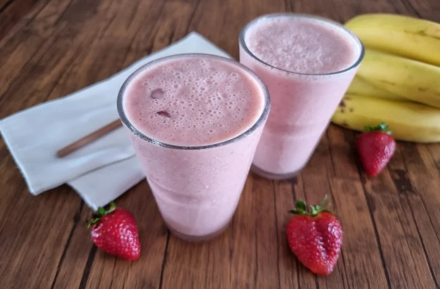

Smoothie de morango e banana
O Smoothie de morango e banana é uma bebida funcional que oferece inúmeros benefícios à saúde. Ele é uma excelente fonte de vitaminas A, B e C, e contém minerais essenciais como ferro, cálcio,
magnésio e potássio. Essa combinação não só fortalece o sistema imunológico, mas também promove energia, auxilia na digestão e contribui para a saúde dos ossos e músculos.
E o melhor, é zero açúcar! Nada melhor que um smoothie delicioso e nutritivo para começar bem o seu dia!